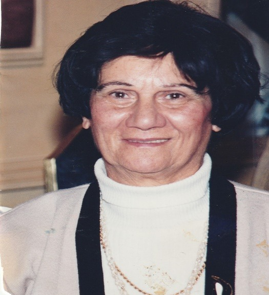
סבתא רחל הייתה אישה מיוחדת עם ערכים, מסורה אחראית וחרוצה עם לב אוהב שהשאירה חותם עמוק בלב כל מי שהכיר אותה.
דרך ההיסטוריה של המשפחה הסיפורים שנאספו כאן נכיר את האישה הנעלה, הנדיבה והחכמה שהייתה והכל בצניעות ובענווה.
במהלך חייה שילבה עבודה קשה עם דאגה עמוקה למשפחתה ולסביבתה.
קורות חיים אלה נכתבים לזכרה כהוקרה לדרך שבה חיה ולערכים שהנחילה למשפחתה ולדורות הבאים אחריה.
סבתא רחל נולדה בירושלים ב-26.8.1926, בת למשפחת מלמד (מועלם) לאמא רגינה שרה ולסבא יוסף חיים.
להורים נולדו 11 ילדים: אהובה, יהודה, יצחק, רחל שמחה, יחזקאל, מרדכי, אסתר, אברהם, שולמית, שושנה ודבורה.
סבתא רחל הייתה הרביעית מבין האחים.
לסבא שלמה ולסבתא רחל נולדו 4 ילדים: יעקב חיים, מלכה, יחזקאל צבי ומשה.
משפחת מלמד גרה צמוד לסבא הרב יעקב חיים סופר זצ"ל ברחוב ה"כוהנים" בשכונת "בית ישראל" בחדר אחד עם מעבר קטן, בחדר המעבר הייתה דלת עץ ומצדו השני היה חדר מלא ספרים שבו ישב הרב וחיבר את "כף החיים".
הרב חי בצנעה – 4 לירות בחודש אותם קיבל מנדיב החי בבורמה.
בביתם השמחה שררה כל העת. למשפחות רבות לא היה מה לאכול אך בביתם האוכל היה מצוי מאחר והאב סבא יוסף הרוויח 3-4 לירות לחודש, מזה שילם לירה אחת עבור שכר דירה וחצי לירה נתן לאמו החיה בצמצום רב.
הכנסה נוספת הייתה לסבא ר' יוסף חיים כשוחט, חזן וקורא בתורה, כל יום בוקר וערב, חגים מועדים ובמיוחד ביום הכיפורים.
לקראת יום הכיפורים היה שוחט עופות לכפרות כל ערב עד חצות ובבוקר היה קם לסליחות, מעבודתו זו הרוויח כ-20-30 גרוש לכלכלת בני הבית.
הבנים החלו ללמוד בגיל 3-4 בתלמוד תורה – בית הספר אותו ניהל סבא.
בגיל 5 כולם כבר ידעו לקרוא, אפילו חלק מהבנות שלח למלמד ללמוד קריאה, דבר שלא היה מקובל באותה תקופה שבנות יצאו ללימודים ואפילו בסיסיים.
פעם בשבוע הייתה מגיעה לבית המשפחה כובסת (שמחה) שכיבסה את הכביסה מהבוקר עד הערב בגיגית גדולה ומתחתיה "פרימוס" אשר הוסיף לחגיגה הגדולה רעש עצום.
כשנפטר הרב עברה המשפחה לגור ברח' זוננפלד 46 בשכונת הבוכרים בית ישראל, ירושלים, מתחת לביהכ"נ "שושנים לדוד" שנוסד בתרס"ד.
בדירה היו 2 חדרים גדולים עם גזוזטרא, מאוחר יותר הוסיפו מטבח. בחדר הפנימי ישנו הילדים הקטנים וההורים ובחדר החיצוני ישנו הילדים הבוגרים. כל הילדים ישנו בחדר אחד שלושה במיטה אחת, בחדר החיצוני הייתה ספה מקרש עם מזרון דק ושטיח, עליה ישנה הבת הגדולה אהובה, לאחר שהתחתנה זכתה במיטה סבתא רחל.
החצר מתחת לבית הייתה מרוצפת אבנים מסותתות גדולות ובמרכזה באר מים עם שואב ידני, משם הובילה הדרך אל מרתף שלעיתים היו ישנים שם כשהיה חוסר מקום בבית.
מעל רחוב זוננפלד היה שוק רוכלים שבו מכרו הכל ירקות פירות בעלי מקצוע: נפח סנדלר ונגר הכל התערבב יחד.
רחצה: כל הילדים הקטנים רחצו בגיגית, פעם בשבוע רחצה יסודית אותם רחצה סבתא רחל אחרי יום עבודה מעייף. הבנים הגדולים הלכו להתרחץ במקווה.
כשהסתיימה הרחצה המים לא נשפכו, הם שימשו לכביסת החיתולים ובסוף לשטיפת הרצפה.
סדר יום: חלב היה מביא הדוד ציון סופר – 2 אונקיות (חצי ליטר) וצריך היה לחלק לכל הילדים, סבא הכניס לכל כוס 1 ס"מ חלב על זה שפך מים חמים, סוכר וקקאו.
המוצץ לתינוק היה חיתול טבול במי סוכר, הארוחה לבית ספר פרוסה בודדה עם ריבה או שמן זית וזעתר.
סבתא רג'ינה ילדה והיה צורך יותר בחלב ואז קיבלה פתק מטיפת חלב כי היא יכולה לקבל אבקת חלב ואבקת חמאה ומהקצבה זו חגגו כל הילדים.
לימודים: מי יכול היה ללמוד בימים קשים אלה, מעטים הגיעו ללמוד עד כתה ד' לתיכון הגיעו רק עשירים בודדים שגרו ברחביה.
סבתא רחל עזרה רבות בניקיון הבית אך שקדה על לימודיה וגמרה את בית ספר עממי "שפיצר" בהצטיינות, הייתה תלמידה חרוצה פקחית שאהבה ללמוד מנהלת בית הספר שוחחה עם האב ר' יוסף ואמרה: אל תשלם את הלימודים עבור ביתך, אני אשלם, רק שתלמד את התיכון הרי היא "בור סוד שאינו מאבד טיפה".
כל יום למדה פרק בתנ"ך בעל פה, (נחמה ליבוביץ הייתה המורה שלה).
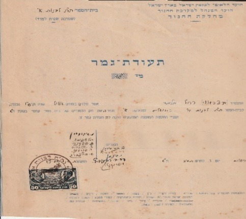
עבודה: המצב בבית קשה וצריך היה להביא פרנסה ולצאת לעבודה, לעיתים הייתה עובדת ב-2 עבודות ומגיעה הביתה עייפה.
כשגדלה, הפרנסה לא הייתה מצויה, וסבא יוסף (היה איש חמור סבר לעיתים) קרע לה את המחברות ואמר לה שתלך לעבוד ולהביא פרנסה הביתה.
מקום העבודה הראשון היה אצל תופרת שנקראה "גברת" ממוצא גרמני, היא לימדה אותה תפירה ובמהרה תפרה שמלות לגבירות ירושלים ולגבירות האנגליות, מאותה "גברת" למדה סבתא לדבר גרמנית ואנגלית שוטפת.
כאשר בגרה, מקצוע התפירה שבו עסקה כל חייה עזר לה לתפור לנו את כל הבגדים ולה את כל השמלות; את הבד קנתה ב"אתא" שם סבא שלמה עבד.
חשמל: באותם ימים היה חשמל רק בבתים בודדים של עשירים, הילדים למדו בעזרת מנורת נפט ונרות.
ניקיון בבית הרב: סבתא רחל בילדותה הייתה בת בית אצל מרן "כף החיים" כל יום שישי הייתה באה לביתו לנקות ומקבלת שילינג עבור העבודה.
הרב היה מברך אותה שתקים בית בישראל ותזכה לחתן טוב ויהיו לה ילדים חכמים ונבונים.
הילדה שהביאה את האור: בהיותה בת 7 פרצה מגפת הפוליו בירושלים בלילה קיבלה חום גבוה ובבוקר קמה משותקת ברגלה, חייה השתנו, אך איש לא שיער אז שהרגל הדוממת הזו שדרשה חימום תחת מנורה כחולה היא שתביא בסופו של דבר את האור לבית כולו.
באותם ימים חשמל היה מותרות חיבור לחשמל עלה 20 לירות – סכום גדול אבל בזכות הצורך הרפואי של סבתא רחל המשפחה קיבלה אישור מיוחד וכך הגיע החשמל לבית המשפחה לפני כולם.
עם החשמל הגיע גם הרדיו הבית הקטן והצפוף הפך בערב לאסיפת שכנים שכולם הגיעו לשמוע חדשות.
במהלך החיים עברה כמה ניתוחים והצליחה להתגבר וללכת.
סבתא רשמה את האח יעקב ללימודים ב"כפר הרואה" ולא היה להורים כסף לשלם עבור הלימודים אז החליטה אמא שהיא צריכה לצאת לעבודה.
פגש אותה מנהל בית הספר "גיבורי עציון" מר מייזלס שמע את העברית הצחה שסבתא מדברת והציע לה לבוא ללמד בבית הספר, וביקש ממנה להשלים את הלימודים להסמכת מורים.
בימים אלה הייתה עלייה גדולה מצפון אפריקה והיה צורך במורים רבים ללמד.
בבית הספר גבורי עציון הייתה מסעדה בתשלום סמלי, ילד אחד היה רעב ביקש מסבתא שתכניס אותו הוא רעב ואין לו כסף לשלם – כמובן הילד נכנס לאכול במסעדה.
אני זוכרת איך היו באים תלמידים אל סבתא הביתה והייתה מלמדת אותם ומשלימה להם לימודים.
לימים קנתה את האנציקלופדיה העברית – מחירה היה בשמים אך לא נרתעה, גם קנתה את האנציקלופדיה תרבות שהייתה מצוירת ומאוד קל היה לעיין בה – אהבנו אותה מאוד ולמדנו משם הרבה.
החלום לא נגדע, שנים לאחר מכן כאם וכרעיה חזרה ללימודים ישבה לילות כימים השלימה בגרויות והוציאה תעודת מורה מוסמך. והפכה למורה אהובה שלימדה בבית ספר "גיבורי עציון" ולאחר מכן בבית ספר "נועם" בחיוך ובסבלנות והאירה את דרכם של תלמידים רבים בישראל.
לאחר מכן למדה תואר בספרנות וניהלה את הספרייה בבית הספר.
בגיל 60 פרשה לפנסיה ולימדה בבית ספר "נועם" מלאכה וספרנות.
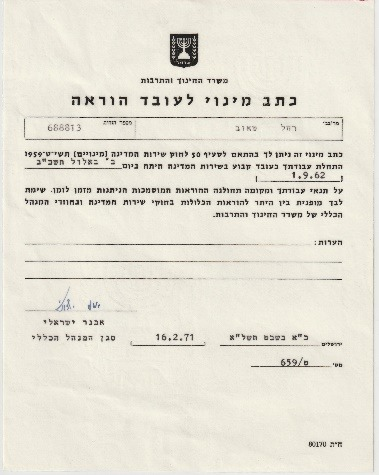
חברה של סבתא התחתנה בכפר אתא, סבתא נסעה ומי ראה אותה שם במסיבה סבא שלמה, סבתא מצאה מאוד חן בעיניו, כתב מכתבי אהבה רבים אל אהובתו אשר גרה בירושלים, לא נח ולא שקט, חקר ודרש וניסה תקופה ארוכה לבקש את ידה עד אשר הסכימה. (כל המכתבים נשמרו).
לא היה לו העוז לספר להוריו מחשש שבעדה החרדית האשכנזית הדבר לא יתקבל.
כשסיפר זאת לאביו ר' משה זצ"ל נסע הנ"ל לרבי מגור בירושלים לשאול על גורל השידוך וכשסיפר לו שסבתא היא נכדתו של מרן "כף החיים" – לחץ את ידו של סבא ואמר לו "מזל וברכה" תדע בת מי היא. מכאן ואילך ההכנות לחתונה החלו בשמחה ובהבנה הדדית.
זכור לנו המשפט מפי סבא יוסף לבנות שהגיע זמנן להתחתן "בגרה בתך – שחרר עבדך" משמעותו התבגרת תלכי ותתחתני ותפני את המקום לבאה אחרייך.
סבא ר' יוסף שאל: "היכן יגורו? מה עם הרהיטים? ענה סבא שלמה: "הכל יש, לא צריך כלום".
נקבע יום החתונה ליום שלישי ראש חודש ניסן תש"ו בשעה 3:30 אחה"צ באולם בית ספר "עירוני לבנים" והנה ערב לפני האירוע נקרא סבא שלמה שהיה גפיר במסגרת ה"הגנה" לעלות למבצע ב"בירייה" הנמצאת סמוך לצפת, השתתף בקרבות כל הלילה ואז ביקש ממפקדו לשחררו כדי שיוכל להגיע לחתונתו, כל האורחים מחכים לחתן שאיחר אך בסופו של דבר הגיע.
החתונה הייתה צנועה תזמורת של 2 נגנים, מעט שתיה, חתיכת עוגה ומשם יצאו לחיים חדשים.
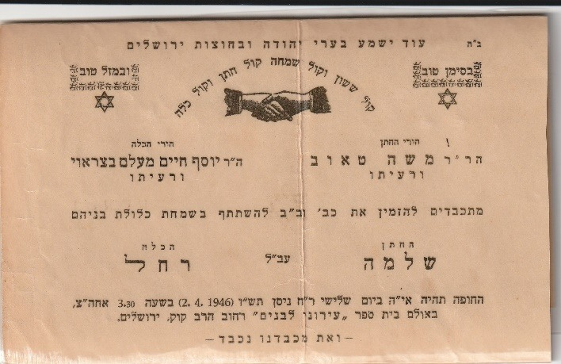
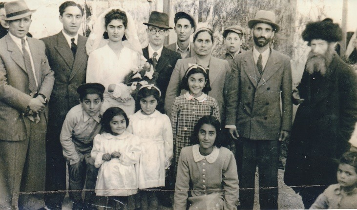
אחרי החתונה כשהגיעה סבתא להוריה שאלו אותה היכן את גרה? מה יש לך בדירה? ואז התברר כי הזוג מתגורר בפחון מטר על מטר, חם מאוד בקיץ וקר מאוד בחורף, עכברים מתרוצצים ואין כלום בבית אפילו לא כריות ושמיכות.
שמעו ההורים נסעו לעיר העתיקה וקנו לבתם שמיכות וכריות.
מדי פעם הגיעה סבתא לביקור ההורים בירושלים, בהיותה בהריון עם בנה יעקב החלו הצירים לתקוף אותה אך בחוץ "עוצר" אין יוצא ואין בא, החליט אביה כי אין ברירה ויצא החוצה להזעיק עזרה עם פנס כדי שלא יירו עליו והנה קצין אנגלי ניגש אליו ואומר לו, אתה מסכן את חייך אסור לצאת מהבתים ואז אמר לו בתי צריכה ללדת, הזעיק הקצין אמבולנס ליווה אותם הקצין לבי"ח הדסה – הר הצופים ושם ילדה את בנה הבכור יעקב חיים.
סבא שלמה היה מגויס, אין ידיעות מהלוחמים, ירושלים במצור בלי מזון ומים וסבתא רחל עם תינוק לבדה בכפר אתא, מחליטים ההורים לשלוח את האחות הקטנה אסתר לעזור לאחותה. לימים נולדה הבת מלכה והבן יחזקאל צבי ותמיד נשלחה האחות מירושלים לעזרה.
המציאות הייתה פחון קטן בכפר אתא חום אימים בקיץ וקור בחורף, בלי אוויר בלי כלים, בלי שמיכות שם גדלו הילדים , מלכה ויחזקאל קבלו מחלות עור מהחום הרב ששרר במקום ומלכה הכחילה מחוסר אוויר. לאחר מכן עברו לצריף של דרמן במרכז ליד הדואר צמוד להוריו סבא משה וצירל שידעו רק לדבר יידיש אך סבתא ידעה את השפה עוד מנעוריה כשעבדה אצל התופרת הגרמנייה. שם היה מעט יותר טוב. הקשיים לא שברו את סבתא, הם רק חישלו אותה; היא הפכה כל מכשול לאבן דרך וכל פיסת חושך למקור של אור עבור כל מי שסבב אותה.
סבא שלמה עבד ב"אתא" מקום עבודה שנחשב טוב תחילה בגיהוץ ואחר כך עבר למחלקת מיזוג אוויר.
במסגרת מבצע לחיילים משוחררים קיבל אבא אפשרות לקנות דירה במחיר מוזל ברמות רמז, שם התגוררנו כ- 6 שנים בתנאים סביבתיים קשים ליהודים דתיים, הלכנו לבית ספר חילוני בשם "הבונים".
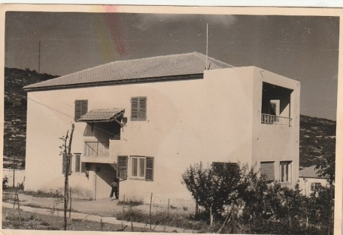
כל מטרתה של סבתא הייתה לעזוב את המקום ולחזור לאזור דתי בכפר אתא.
כשסבתא באה לרשום אותנו לבית הספר במחלקה לחינוך בעיריה הם רשמו אותנו לבית ספר חילוני סבתא התעקשה לרשום אותנו רק בבית ספר דתי. "בגלל זה עברתי דירה לכאן", אמרה.
בילדות כשגרנו ברמות רמז ההורים היו מקבלים תלושים לקניות "תקופת הצנע" אחד האחים הגיע לסופר לקנות ביצים, על השולחן של המוכר היו תלושים – מתוך מטרה לעזור בבית העני לקח את פנקס התלושים ורץ בשמחה להביא לאמא.
אמא צעקה עליו שילך מיד ויחזיר את התלושים ויגיד שלקח בטעות.
ואכן חזרנו לכפר אתא וקנינו בית ממשפחת קאופמן ב-8,000 לירות.
לאמא לא היה כסף לתת לאדון קאופמן אז היא לקחה הלוואה מאבא שלה, סבא יוסף, שאותה החזירה עם הזמן.
מסביב לבית הייתה חצר גדולה שם זרענו ירקות בערוגה, גזר פיטרזיליה, עגבניות ולאט לאט שתלנו עצים ונהננו לשחק במקום.
בחצר היה סלע גדול שם שיחקנו ברופא וחולה, לוקחים סירים מהבית ומשחקים שם כל היום. מסביב לסלע צמחו רקפות ושושנים שאמא שתלה.
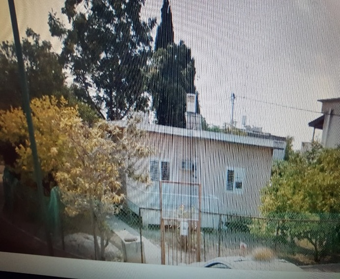
סבא התפלל בבית הכנסת "חסידי גור" ולאחר מכן עבר לבית הכנסת הגדול ובהמשך בנו את בית הכנסת פא"י ושם התפלל.
כשסבא חזר מבית הכנסת התחלנו לשיר שירי שבת ואכלנו מרק עוף גפילטא פיש וצימס גזר מדי פעם היה קומפוט.
אבא היה תמיד מספר בדיחות ומצחיק אותנו בערב שבת גם סיפורים לא חסך מאיתנו.
חלפו ועברו השנים גדלו הילדים ובשנת 1962 החליטה סבתא לצאת לעבודה בהוראה מאחר והמשכורת של סבא לא הספיקה לפרנסת המשפחה, קבלה עבודה בבי"ס "גבורי עציון" ושם עבדה עד יציאתה לפנסיה.
כשהייתה נשואה ואנחנו ילדים קטנים היינו נוסעים כל פסח לירושלים לחודש ימים ברכבת, 4 שעות נסיעה עם בגדים פירות מהעצים ומזוודות כבדות.
סבא שלמה הרים את המזוודות וקיבל דיסקוס בגב ושכב בבית חולים תקופה ארוכה ואנחנו למדנו בבתי הספר בירושלים עד שהבריא.
בקיץ ההורים שלה היו באים לבקר אותנו והיו נשארים לשבוע שבועיים להתפנק אצל הבת שלהם. סבתא הייתה מכינה להם מטעמים והם נהנו כאן מאוד.
את חג הפסח עשינו יחד – היה חג מקסים: כל האחים והילדים היו באים לסבתא רגינה ולכל אחד חילקה אגוזים (לא קלופים) – כמה היינו מאושרים ממתנה קטנה זו!
בחדר הגדול נפרס שולחן גדול לקראת ליל הסדר, כל המשפחה הייתה מסובה, סבא עשה קידוש וקראנו את האגדה ושרנו את כל השירים עד סופה.
בערב חג סבא היה מכין מצות בידיו עם מים מהבאר ואת המצות הללו עגולות וגדולות אכלנו כל חג הפסח.
את האפיקומן היו מחביאים עטוף במגבת על גב של אחד הילדים.
לפני חג הפסח אמא לקחה אותנו לקנות בגדים לחג אצל גב' אייזנברג וגם אצל גברת פריד – אלה היו החנויות היחידות אז בכפר אתא.
את הבגדים קנתה בתשלומים ואת החוב היו רושמים בפנקס, כל חודש אמא הייתה משלמת קצת עד שגמרה את החוב.
לאח של אבא – דוד אפרים הייתה במרכז חנות מכולת ירקות ופירות שם אמא הייתה קונה את המצרכים לבית ורושמת בפנקס בידיה הנאמנות של דודה פרידה את החוב הייתה משלמת לאט לאט.
ביום חמישי אמא הייתה קונה 2 דגים חיים לעשות גפילטא פיש לשבת שמה אותם באמבטיה מלאה מים וביום שישי בבוקר היינו לוקחים מקל נותנים לדג מכה וחותכים לו את הראש, את העיניים היתה מוציאה ונותנת לנו לדרוך ולהגיד "תפצח העין הרעה" מנהג כדי שלא יהיו מקנאים בנו זרים.
אמא דאגה שכל הילדים שלה יגורו בקרית אתא, סביבה.
ביום שישי משה ויחזקאל היו באים לאכול צהריים ובשבת כול האחים היו באים לבקר אותה כולנו יחד.
סבא שלמה חלה בסרטן תחילה בכיליה, יחזקאל ראה שהוא מרזה לקח אותו לבדיקה בבית חולים ומשם לניתוח.
סבא חי עוד 10 שנים.
הרבי ממאקווא אמר לו ללכת לבקר את אביו שקבור בצפת ליד הארי הקדוש ובזכות זה הוא יינצל מהמחלה.
לאחר 10 שנים לא היה עוד בכוחו לעלות לצפת ומאז חלה ואמא טיפלה בו במסירות עד יום מותו.
נולד לאב יהודה מועלם ולאם חביבה בעיר בצרה (עירק) בה כיהן כרב ראשי במשך 40 שנה. כאשר הנכד הראשון שבק חיים בליל הסדר פתאום, חשך העולם בעדם הסכימו לעזוב את הארץ ולנסוע לארץ ישראל דרך הים. הם גרו בארץ ישראל בעיר העתיקה יחד עם הערבים וחיו איתם ברעות ובידידות. אחרי שנים עברו לגור בשכונה יהודית בשער שכם, ומשם עברו לגור בשכונת בית ישראל. אביו יהודה עזב את עירו בצרה ועלה לארץ שנה אחת לפני מלחמת העולם הראשונה. חי בה שנה ונקבר בהר הזיתים.
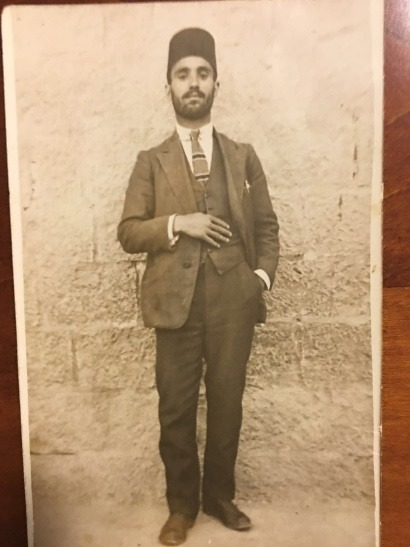
גווענו ברעב. מכרנו מה שהיה בבית: כלי כסף, זהב, שטיחים, לערבים שבאו מעבר הירדן (סלט). אכלנו מאכלים שאכלו העיזים: כוסבי, תורמוס, לחם עדשים, לחם שעורים. לא היה סוכר. אין שמן, אורז ולא לחם לבן. היינו רודפים אחרי החיילים התורכיים שאכלו תפוז ואת הקליפה שזרקו אכלנו. היה לי אח בשם יצחק שגייסו אותו התורכים. הוא ידע לדבר צרפתית ושרת בבית החולים האיטלקי שליד מאה שערים. היו 18 חיילים יהודיים ונתנו להם אוכל יבש. כמעט כל יום בישלו וחילקו ביניהם. יום יום היה עומד ברחוב מול בית החולים והיה קורא לאחיו שמספרו 18 והוא היה מביא לו מעט מרק עדשים. עד שהגיע הביתה לא נשארה אף טיפה בצלחת. בבית הספר חילקו לכל התלמידים פרוסת לחם ומעט מרק עדשים או פולים מכספי הג'וינט ששלחו ובזה נשאר חי.
המלחמה נמשכה בין התורכים והאנגלים משך 3 שנים עד שבערב חנוכה נכנסו האנגלים והתורכים ברחו. במשך המלחמה הרבה חיילים תורכים היו מוכרים את נשקם כי לא היה להם אוכל. חילקו לכל חייל 2 פיתות יבשות כאבן ליום והיו גוועים ברעב. כשנכנסו האנגלים רצו לתת תעסוקה לתושבים סללו כבישים כדי שיחיו.
כשהיה תלמיד בא ארבה כבד מאוד שאכל את כל הירקות ואף את העצים. הטילו על כל תלמיד חובה לאסוף פח מלא ארבה. פעם ירד שלג כבד מאוד והתמוטט הגג והכריחו אותנו לעבור לדירה אחרת.
כשסיים את לימודיו התקבל כמורה בתלמוד תורה בני ציון ואחר כך כמנהל עד שיצא לפנסיה.
בירושלים הייתה רעידת אדמה חזקה בהיותו יושב עם תלמידיו בכיתה הכיתות התבקעו אך לא קרה להם אסון. אך בבית נפלו כל הכוסות והקערות ונשברו לרסיסים.
ארבעים שנה שימש אפוטרופוס של ישיבת "שושנים לדוד" בשכונת בית ישראל. נשא לאישה רג'ינה (ז"ל) בת הרה"ג ר' יעקב חיים סופר ז"ל מחבר "כף החיים".
נפטר בי"ד תשרי תשנ"ז.
אבא של סבא יוסף חיים - חכם יהודה מעלם – חכם באשי בבצרה – בן לעבדאללה אליהו צאלח ופריחה מעלם.
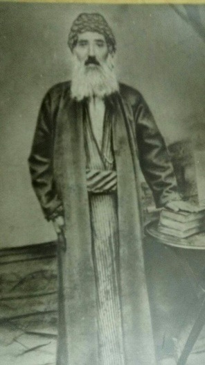
אמא של יוסף חיים – חביבה מעלם – בת ליצחק ועזיזה שרבאני.
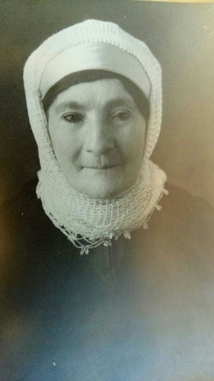
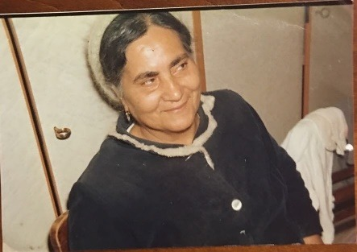
אביה של רג'ינה : הרה"ג יעקב חיים סופר בן יצחק ברוך ואסתר סופר
אימה של רג'ינה: פריחה בת שמחה
רג'ינה נולדה בשנת 1900.
סבתא רג'ינה עליה השלום נולדה בשנת 1900 ועלתה לארץ בשנת 1903. היא עלתה עם אימה, סבה יצחק ברוך ורעייתו אסתר. זאת לאחר שאביה יעקב חיים עלה קודם ולא רצה לחזור לחוץ לארץ.
היא תמיד סיפרה כי הם תעו במדבר ולא היה להם מים; כנראה שלא עלו דרך נתיב השיירות הידוע, כמו אברהם אבינו שעלה לאורך הפרת עד חרן ומשם ירד דרומה לארץ ישראל, אלא ניסו ללכת במסלול החוצה את המדבר הסורי . סבתי תמיד סיפרה שעלו על גמלים.
רג'ינה למדה בבית הספר אוולינה דה רוטשילד בתקופה שלא היה נהוג לשלוח את הבנות ללמוד . אביה יעקוב חיים שילם עבורה שכר לימוד של שילינג לשבוע.
סבתא רגינה היתה סבתא עדינה וטובה טיפלה בילדים ובישלה, סבא יוסף היה עוזר לה הרבה הן בקניות והן בבישולים.
סבתא רג'ינה היתה בפועל מזכירתו של אביה. כמו כן הייתה מתרגמת את מכתביו לאנגלית.
בתאריך ח' אדר ב' תרפ"א נישאה לר' יוסף חיים מועלם (מלמד) בן ר' יהודה וחביבה.
נפטרה בכ"ב אלול תשד"מ.
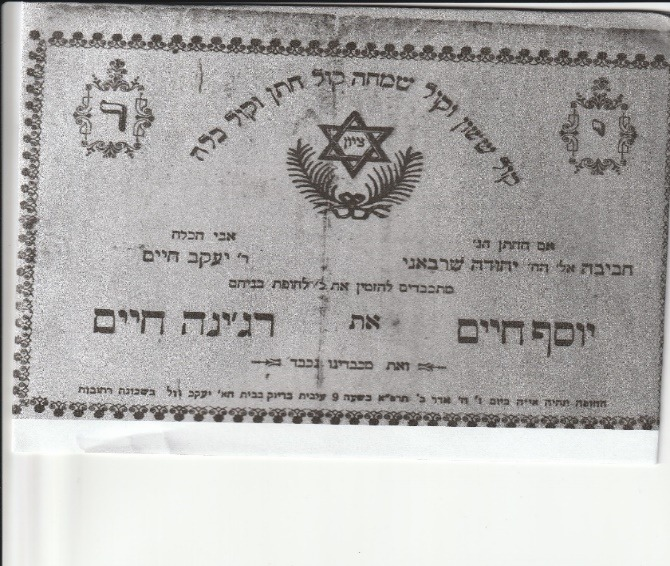
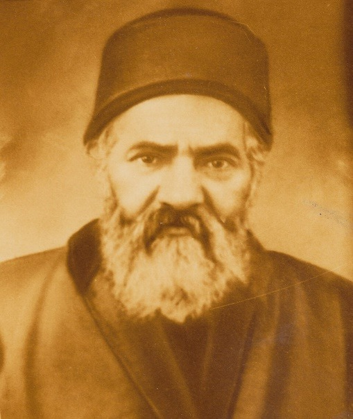
נולד בשנת תר"ל (1870) בבגדד לרב יצחק ברוך ממשפחת 'מוסא' ולאמו מרת אסתר. מאביו למד תורה וכתיבת סת"ם. נתחנך בישיבת 'מדרש בית זלכה' תחת השפעת ראש הישיבה החכם עבדאללה סומך, וחכם אלישע דנגור החכם באשי וראש בית הדין בגדד. הושפע בלימוד תורה וקבלה מחכם יוסף חיים - ה'בן איש חי', ואף הוסמך על-ידו למורה צדק. לפרנסתו עבד כסופר סת"ם, מכאן משפחתו - 'סופר'.
בראש חודש אייר תרס"ד (1904) עלה לארץ ישראל, יחד עם חבריו הרבנים יחזקאל עזרא רחמים וצדקה חוצין. גר בירושלים ולמד בישיבת המקובלים בית אל. בשנת תרס"ט (1909) הקים יחד עם רבנים יוצאי בגדד את בית הכנסת 'שושנים לדוד' בשכונת בית ישראל, בה היה דורש בשבתות וימים טובים. בעליה קטנה הצמודה לבית הכנסת, למד וחיבר ספריו. מאוחר יותר הצטרף ללומדי הקבלה בישיבת רחובות הנהר, שם היה תלמיד חבר לרב חיים שאול הכהן דוויק.
את כף החיים כתב לפחות 40 שנה מגיל 30 עד פטירתו.
הרב סופר נתפרסם כפוסק הלכה, תלמיד חכם ומקובל, בעיקר בזכות ספרו ההלכתי 'כף החיים', ליקוטי דינים ופסקי הלכה על שלחן ערוך. בין חיבוריו: 'קול יעקב' - הלכות סת"ם, 'חוקי חיים' - דרשות לאירועים שונים, 'חיים עד העולם' - דרשות וביאורים לסיומי מסכת, 'יגל יעקב' - דרשות על סדר פרשת השבוע, 'ישמח ישראל' -דרשות על סדר פרשת השבוע. עוד מחיבוריו שעדיין בכתב ידו: 'באר מים חיים' - שו"ת, 'בית יעקב' - דרשות על סדר פרשת השבוע, 'חפץ בחיים' - דרשות לאירועים שונים, 'עדות ביעקב' - דרשות לד' שבתות, וביאור פרקי אבות. וכן החיבור 'חזיונות יעקב' - קרוב ל-800 חלומות חזיונות וגילויים שנתגלו לו ורשמם.
הרב נפטר בגיל 69 ביום שבת ט' סיוון ה'תרצ"ט (1939), הוספד על ידי שישה עשר מרבני ירושלים, ונקבר בחלקת החסידים לעדת הבבלים שבהר הזיתים.
סיפורים אלה הם חלון קטן אל נשמתה הגדולה של סבתא רחל שנזכור ונספר ונעביר הלאה את האור שהיא הביאה לעולם.
נסעה לאחותה רחל כדי לעזור לה עם הילדים הקטנים בכפר אתא ושם התאהבה בבחור בשם ברוך, שהייתה לו חוות סוסים באזור.
הרומן הסתיים כי אסתר היתה חייבת לחזור לירושלים.
האהבה נמשכה שנים וגם לאחרונה כשבגרה והתאלמנה הוא ניסה לחזור אליה.
גם דודה שושנה נסעה לעזור לאחותה בטיפול בילדים שנולדו אחד אחרי השני, באחד הימים רוכל ערבי הגיע לבית למכור את סחורתו ושושנה מצאה חן בעיניו והציע לדודה רחל לקנות אותה.
דודה רחל שאלה "כמה אתה מציע?" וגם התמקחו על המחיר, שושנה שמעה את הוויכוח ברחה והתחבאה עד שהוא עזב.
גם לקנות נדוניה היינו נוסעים לכפר אתא לקנות בבית חרושת אתא מגבות בגדים סדינים וציפיות כי לסבתא הייתה הנחה – סבא שלמה עבד שם.
כמובן הביאו הביתה פירות מהעצים שהיו בגינה של סבתא.
בזכות אחותי רחל היה לסבא וסבתא העדפה בקבלת החשמל לבית, לא כולם היו מחוברים לחשמל, מאחר והיה לה צורך במנורה כחולה לטיפול ברגל לאחר שיתוק.
בזכות החשמל היה למשפחה רדיו וכל השכונה באה לשמוע אצלם חדשות בבית.
אחותי רחל עשתה בגרות בגיל מאוחר ואני לימדתי אותה ומשם הגיעה להיות מורה בישראל.
כשאחותי הגיעה לביקור בירושלים עם הילדים בפסח היינו יחד הולכים לכותל להתפלל.
כשפגשה אותי לראשונה בהיותי חבר של הבת מלכה לא הפסיקה לשאול אותי: "איך, אחרי שהסתובבת בכל העולם, תוכל לחיות בקרית אתא?"
תמיד עניתי לה אותה תשובה: לאדם טוב יהיה טוב בכל מקום.
לעיתים עשיתי לה קניות והיתה מתעקשת לשלם לי, לא ויתרה והתעקשה לראות את הקבלה כדי שלא אקח פחות כסף ממנה.
בילדותי הלכתי ללמוד אחר הצהריים בישיבת "המתמידים" קרוב לבית סבתא.
בהפסקה הייתי הולך לסבתא לאכול אצלה ארוחת ערב, ובסיומה נתנה לי שוקולד וארטיק מהמקפיא.
כאשר סבא שלמה חזר מהתפילה היה מלווה אותי חזרה לישיבה.